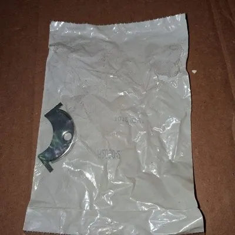
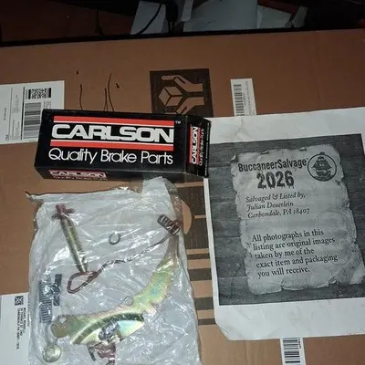
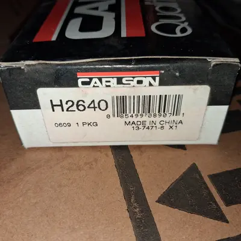
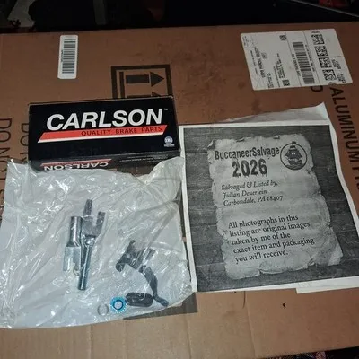

Brake Pad & Shoe Hardware
Carlson H2090-2 Brake Adjuster Cable Guide NOS Mustang 64-73 79-93 F-150 Bronco
H2090-2
Fits 1967-1996 Ford Bronco · 1975-2002 Ford E-150 Econoline (3000 listed)
$12.99
View details21 parts in Self-Adjuster Kits, each with photos, part numbers and condition on its own page. Open a part to see every vehicle it is listed for.
21 parts
Online checkout through Square. Ships from Carbondale, PA, or pick up by confirmed appointment only. Fitment question? Message us.

H2090-2
Fits 1967-1996 Ford Bronco · 1975-2002 Ford E-150 Econoline (3000 listed)
$12.99
View details
H2102
Fits 1976-1996 Ford Bronco · 1976-1996 Ford F-150 (1059 listed)
$12.99
View details
H2104
Fits 1967-2009 Ford F-350 · 1996-1998 Dodge B2500 (3000 listed)
$12.99
View details
H2108
Fits 1964-1970 Dodge A100 · 1980-1989 Plymouth Gran Fury (3000 listed)
$13.99
View details
H2114
Fits 1970-1976 Dodge Coronet · 1969-1978 Dodge Monaco (3001 listed)
$12.99
View details
H2118-2
Fits 1995-2009 Mazda B4000 · 2001 Ford F-100 Ranger (585 listed)
$12.99
View details
H2545
Fits 1963-1968 Chrysler 300 · 1963 Chrysler Newport (3000 listed)
$12.99
View details
H2587
Fits 1991-1992 Cadillac Brougham · 1996 Cadillac Commercial Chassis (91 listed)
$17.99
View details
H2591
Fits 1978-1986 Chevrolet C10 · 1978-1986 Chevrolet C10 Suburban (1506 listed)
$20.99
View details
H2599
Fits 1996-1998 Dodge B2500 · 2000-2001 Dodge Ram 4000 (3000 listed)
$20.99
View details
H2622
Fits 1985-1987 Buick Regal · 1985 Buick LeSabre (1784 listed)
$16.99
View details
H2623
Fits 1985-2003 Chevrolet S10 · 1985 Buick LeSabre (60 listed)
$17.99
View details
H2640
Fits 1992-1994 Chevrolet Blazer · 1988-1999 Chevrolet C1500 (24 listed)
$14.99
View details
H2641
Fits 1992-1994 Chevrolet Blazer · 1988-1999 Chevrolet C1500 (24 listed)
$19.99
View details
H2644
Fits 1993-2000 Buick Century · 1991-1999 Buick LeSabre (490 listed)
$13.99
View details
H2658
Fits 1995-2002 Chrysler Neon · 1995-2005 Dodge Neon (196 listed)
$18.99
View details
H2659
Fits 1995-2002 Chrysler Neon · 1995-2005 Dodge Neon (196 listed)
$13.99
View details
H2664
Fits 1996-2007 Dodge Caravan · 1996-2000 Chrysler Grand Voyager (519 listed)
$17.99
View details
H2665
Fits 1996-2000 Chrysler Grand Voyager · 1996-2007 Chrysler Town & Country (14 listed)
$14.99
View details
H2695
Fits 2009-2012 Chevrolet Colorado · 2009-2012 GMC Canyon (137 listed)
$16.99
View details
H2696
Fits 2004-2008 Chevrolet Colorado · 2005-2008 Chevrolet Silverado 1500 (16 listed)
$12.99
View details